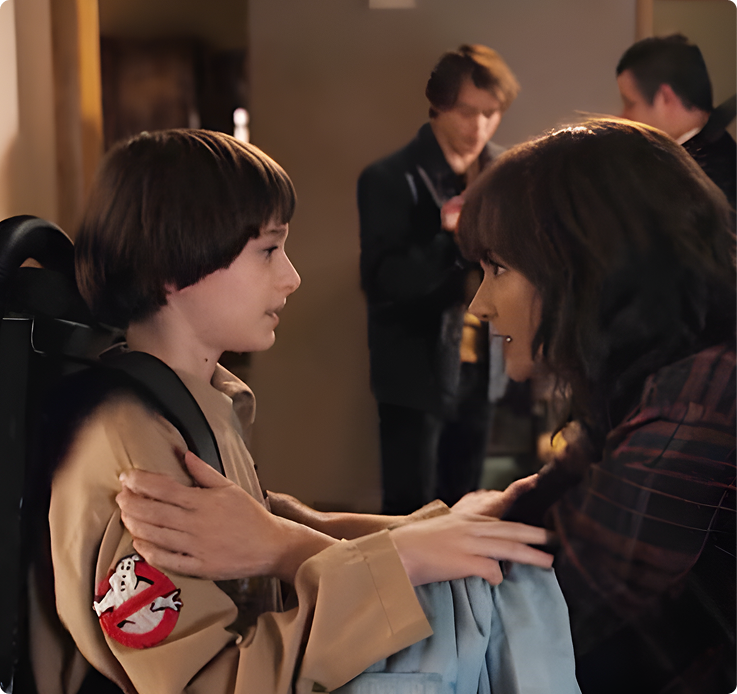
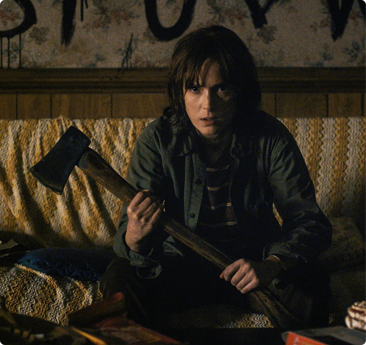
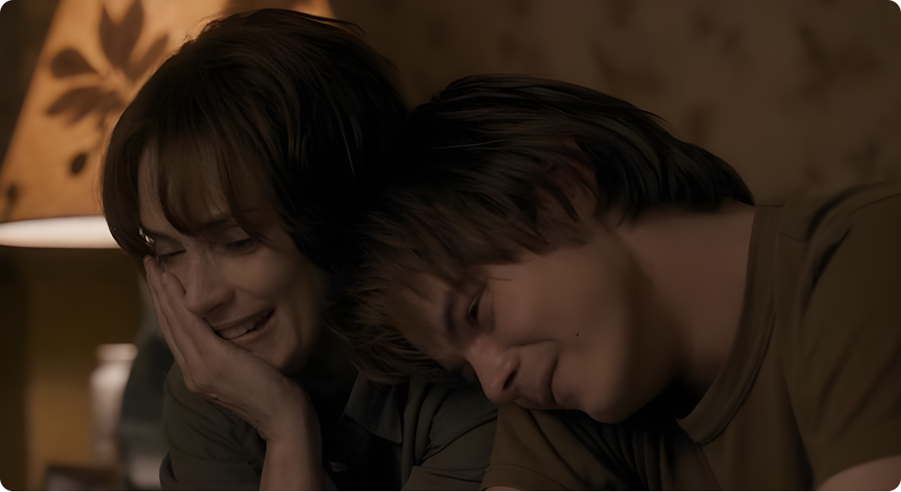
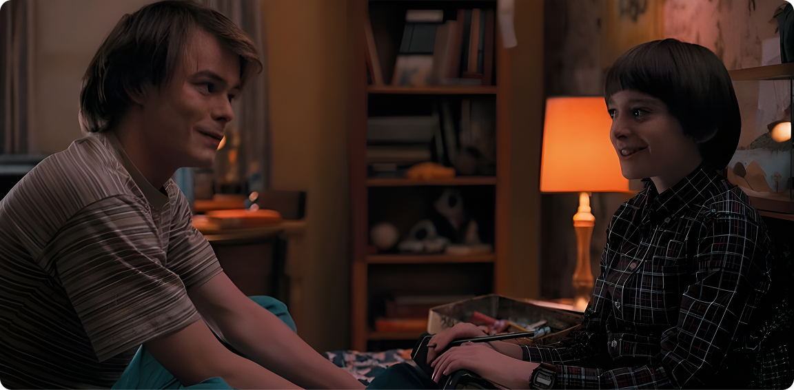
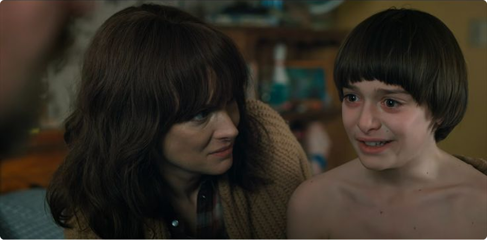
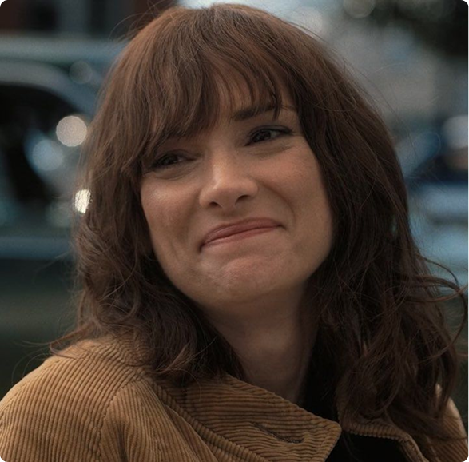
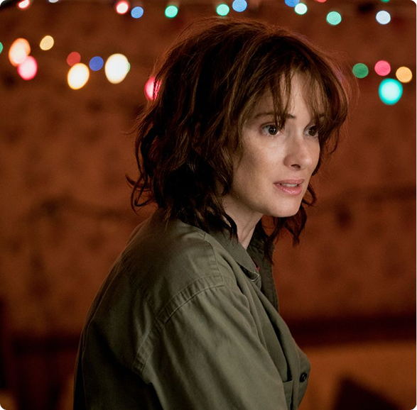

Survival parenting:
воспитание в режиме выживания
Джойс — мать-одиночка, представительница рабочего
класса, постоянно сталкивающаяся с финансовыми трудностями.
И это не просто декорации, а важный фактор,
определяющий её поведение.
Исследования показывают, что в таких сложных обстоятельствах
воспитание детей часто сводится к так называемому survival
parenting — стратегии, ориентированной, в первую
очередь, на обеспечение безопасности и выживания,
а не на создание идеального эмоционального
комфорта.
Мать, действующая в таком режиме, может казаться суровой,
тревожной или отстранённой, но это не говорит
о её безразличии, а скорее является способом
адаптации к постоянному стрессу.


Родительфикация Джонатана:
выбор матери или сила
обстоятельств?

Одна из основных претензий к Джойс связана
с её сыном Джонатаном. Зрители видят в нём слишком
взрослого подростка и считают, что Джойс намеренно возложила
на него роль второго родителя. В психологии это явление
известно как родительфикация.
Важно понимать, что родительфикация не всегда является
результатом плохого воспитания. Она часто встречается
в семьях, где отсутствует второй родитель, где есть
материальные трудности и постоянная угроза безопасности.

Принципиально важно: в сериале не показано, что Джойс
требует от Джонатана быть взрослым. Он сам берёт
на себя эту роль, реагируя на сложившуюся ситуацию,
а не выполняя материнский приказ. Это ключевое различие.
В семье Байерсов родительфикация — это скорее
структурная проблема, вызванная обстоятельствами,
а не моральная ошибка матери.
Trauma-Informed Parenting:
вера в Уилла против всего мира
Критика в адрес Джойс особенно усиливается, когда речь
заходит о Уилле. Зрителям кажется, что она игнорирует его
боль или не знает, как с ней справиться.
Trauma-informed parenting — подход, при котором опыт
ребёнка признаётся реальным, даже если он кажется странным
или пугающим.
Именно Джойс с самого начала проявляет такой подход. Она
единственная, кто безоговорочно верит Уиллу, когда все вокруг
считают её сумасшедшей. Она не обесценивает его
переживания, не пытается вернуть его к нормальной жизни
и не заставляет делать вид, что ничего
не случилось.
Травма матери: гипербдительность
вместо безразличия
Исследования показывают, что родители, имеющие собственные
неразрешённые травмы, часто испытывают трудности
с управлением своими эмоциями, но при этом способны
проявлять глубокое сочувствие.

Джойс как раз такой персонаж. Её тревожность, резкость,
эмоциональные срывы — это не признаки плохого
материнства, а симптомы хронической гипербдительности,
характерной для людей, переживших постоянную угрозу потери
близких.
При этом сериал показывает, что Джойс:
- не злоупотребляет своей властью над детьми;
- не пытается их контролировать;
- не навязывает им свои планы на жизнь;
- не заставляет соответствовать каким-то стандартам.
В результате Джонатан и Уилл вырастают чуткими,
внимательными и умеющими сопереживать — и это
прямое следствие атмосферы в их семье, где чувства
не подавляются, даже если не всегда получают идеальную
поддержку.
Несправедливые критерии:
судить с позиции безопасности,
которой нет
Проблема не в том, что Джойс Байерс — плохая
мать. Проблема в том, что к ней применяют критерии,
которые можно применить только в следующих условиях:
- стабильность;
- безопасность;
- поддержка.
Однако таких условий попросту нет в их семейном
положении.
Итог
Джойс — это не пример идеального родителя,
а честный портрет матери, воспитывающей детей в условиях
травмы и бедности, делающей выбор не между хорошо
и плохо, а между выжить и потерять всё.


Возможно, именно поэтому её образ вызывает такое раздражение
у некоторых зрителей. Он слишком реалистичен и далёк
от приятной иллюзии, в которой любовь всегда выглядит
безупречно и никогда не страдает под давлением
обстоятельств и пережитых моральных травм.